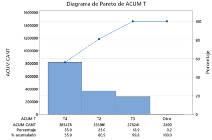
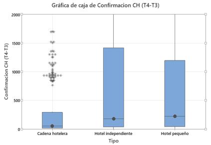
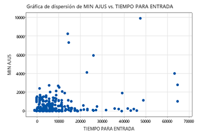

Descubrimientos de la Fase Medir (Planteamiento de Preguntas) - Parte 1
¿En qué etapa se concentra la mayor variabilidad y tiempo?
Segmentación Pareto: El sub-tiempo T4 (espera de respuesta/confirmación del hotel) representa el 55,9% de la variabilidad acumulada de todo el ciclo.

¿El tipo de hotel genera diferencias en la velocidad?
ConfirmadaSí (p=0,000): Cadenas responden rápido (mediana 53 min). Posadas e independientes provocan estancamientos severos (178,5 a 223 min).

¿La cercanía del Check-in modifica el orden en la cola de solicitudes?
ConfirmadaSí (p=0,000): Violación regla FIFO. Se priorizan reservas urgentes <48h (39 min), dejando engavetadas las de largo plazo (mediana 299 min).

¿Ingresar solicitudes fuera de horario penaliza el tiempo?
ConfirmadaSí (p=0,000): On-Time mediana 57 min. Off-Time (cierre administrativo del proveedor) eleva la mediana de espera a 1.052 min.

ANALIZAR
Demostración Estadística de las Causas Raíz
Estructuración de Causas Potenciales (6M)

Priorización de Soluciones
Recompensa Baja descartadas. Alto impacto componen el núcleo.

Cierre de Proyecto
La implementación de estas soluciones sistémicas garantiza que SOADOS pueda escalar sus operaciones corporativas de forma limpia, absorbiendo un mayor volumen de negocio sin elevar la nómina operativa. La transición del "esfuerzo humano desordenado" al "flujo continuo controlado por datos" es el legado de este ciclo DMAIC.
Fin de la Presentación
© 2026 - Proyecto Lean Six Sigma (DMAIC) - Rogelio Jeitani
UPC